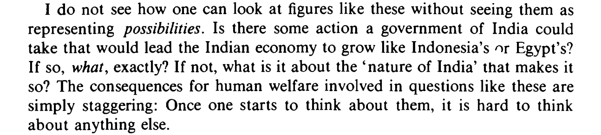

Recommendations always welcome.
- Nick Bloom et al: Are Ideas Getting Harder to Find?. "Across a broad range of case studies at various levels of (dis)aggregation, we find that ideas — and in particular the exponential growth they imply — are getting harder and harder to find."
- Gregory Clark: The Condition of the Working Class in England, 1209–2004. After several centuries without measurable productivity growth, real wages seem to have started to grow circa 1640, 150 years before the Industrial Revolution. It's not clear why this happened. The nature of the phenomenon is also debated.
- Tyler Cowen: The Great Stagnation. "As Cowen argues, our economy has enjoyed low-hanging fruit since the seventeenth century: free land, immigrant labor, and powerful new technologies. But during the last forty years, the low-hanging fruit started disappearing, and we started pretending it was still there. We have failed to recognize that we are at a technological plateau."
- Warren Devine: From Shafts to Wires: Historical Perspective on Electrification. The deployment of electricity in manufacturing, and the greater efficiency it enabled, took decades to realize, as factories and processes had to be reorganized.
- Jeremiah Dittmar: Origins of growth: How state institutions forged during the Protestant Reformation drove development. "This column analyses the diffusion of legal institutions that established Europe’s first large-scale experiments in mass public education. [...] Cities that formalised these institutions grew faster over the next 200 years, both by attracting and by producing more highly skilled residents."
- Jack Goldstone: How an Engineering Culture Launched Modernity. "I argue that the crux was a “marriage of engineering culture and entrepreneurship.” That is, elites developed a new “engineering culture” that spread beliefs wholly different from those behind Renaissance, Medieval, or Classical approaches to knowledge and craft production." See also Mokyr, below.
- Robert Gordon: The Rise and Fall of American Growth. "The Rise and Fall of American Growth challenges the view that economic growth will continue unabated, and demonstrates that the life-altering scale of innovations between 1870 and 1970 cannot be repeated."
- Gwern: Origins of Innovation: Bakewell & Breeding. "A review of Russell 1986's 'Like Engend'ring Like: Heredity and Animal Breeding in Early Modern England', describing development of selective breeding and discussing models of the psychology and sociology of innovation."
- Anton Howes: The Spread of Improvement: Why Innovation Accelerated in Britain 1547-1851. "The paper charts the emergence and spread of an improving mentality, tracing its transmission from person to person and across the country. The mentality was not a technique, skill, or special understanding, but a frame of mind: innovators saw room for improvement where others saw none. [...] By creating new institutions and adopting social norms conducive to openness and active sharing, innovators ensured the continued dissemination of innovation, giving rise to modern economic growth in Britain and abroad."
- Chang-Tai Hsieh and Peter Klenow: Misallocation and Manufacturing TFP in China and India. "Large differences in output per worker between rich and poor countries have been attributed, in no small part, to differences in Total Factor Productivity (TFP). The natural question then is: what are the underlying causes of these large TFP differences? [...] A recent paper by Restuccia and Rogerson (2008) takes a different approach. Instead of focusing on the efficiency of a representative firm, they suggest that misallocation of resources across firms can have important effects on aggregate TFP. Our goal in this paper is to provide quantitative evidence on the potential impact of resource misallocation on aggregate TFP. [...] We find that moving to “U.S. efficiency” would increase TFP by 30-50% in China and 40-60% in India."
- Hyejun Kim: Knitting Community: Human and Social Capital in the Transition to Entrepreneurship. "Using the unique dataset from Ravelry—the Facebook of knitters—I study why and how some knitters become designers. I show that knitters who make the entrepreneurial transition are distinctive in that they have experience in fewer techniques and more product categories. I also show that this transition is facilitated by participation in offline social networks where knitters garner feedback and encouragement."
- Chad Jones: The Facts of Economic Growth. "Why are people in the richest countries of the world so much richer today than 100 years ago? And why are some countries so much richer than others? Questions such as these define the field of economic growth. This paper documents the facts that underlie these questions."
- Chad Jones: R&D-Based Models of Economic Growth. Problem: endogenous growth theories just don't match the observed data.
- Joel Mokyr: A Culture of Growth. "Mokyr argues that a culture of growth specific to early modern Europe and the European Enlightenment laid the foundations for the scientific advances and pioneering inventions that would instigate explosive technological and economic development."
- Mara Squicciarini: Human Capital and Industrialization: Evidence from the Age of Enlightenment. "An ample literature has highlighted the importance of human capital for economic development in the modern world. However, its role during the Industrial Revolution is typically found to be minor. [...] We show that distinguishing between average worker skills and upper tail knowledge is crucial, reinstating the role of human capital for industrialization."
- Joe Studwell: How Asia Works. How successful Asian economies grew by applying neo-List-ian rather than Smith-ian ideas. (Related Fallows article.)
Some more science-specific papers:
- Pierre Azoulay et al: Incentives and Creativity: Evidence from the Academic Life Sciences. HHMI-funded investigators "produce high impact papers at a much higher rate than a control group of similarly-accomplished NIH-funded scientists" and "the direction of their research changes in ways that suggest the program induces them to explore novel lines of inquiry".
- [List in progress.]